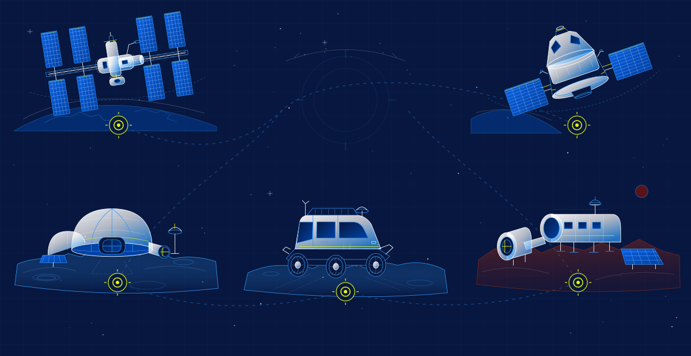

Fire safety across
space habitats.
Choose a place, then a fire type.
Follow the evidence back to the experiments.
Select an illustrated habitatSchematic · not to scale

AI summary
Ask a research question to explore the evidence.
Sources
Loading reviewed evidence…
Relevant literature
Combined fire-safety insight
Choose a paper to explore its evidence.
Selected source
Source findings
Reviewed evidence